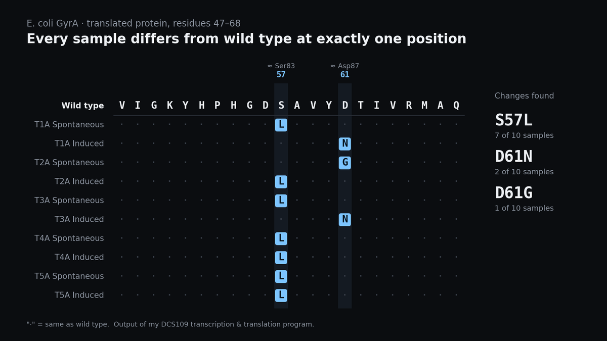

DNA Transcription & Translation
My DCS109 final project: a program that follows DNA through transcription and translation, then pinpoints exactly where mutated proteins differ from the original.

How it works
- Read the data: parses DNA sequences from a FASTA file.
- Find the promoter: locates the
TATAATpromoter box that signals where transcription begins. - Transcribe: starting 16 bases after the promoter, pairs each template-strand base with its mRNA partner (A→U, T→A, C→G, G→C).
- Translate: finds the
AUGstart codon and reads codon by codon into amino acids until it hits a stop codon. - Find mutations: compares each protein to the wild type and marks every position that differs.
What it found
I ran the program on sequences from the quinolone resistance-determining region (QRDR) of E. coli GyrA, the gene for the A subunit of DNA gyrase. Each of the 10 spontaneous and induced mutants had exactly one amino-acid change: S→L at position 57 in seven samples, and D→N or D→G at position 61 in three. In the full-length protein, those positions line up with Ser83 and Asp87, the best-known mutation hotspots for fluoroquinolone antibiotic resistance.
Testing
Every function has test cases that compare its output against the expected answer, from finding a promoter in a toy sequence to translating AUGGCUACCGAA into ATE.